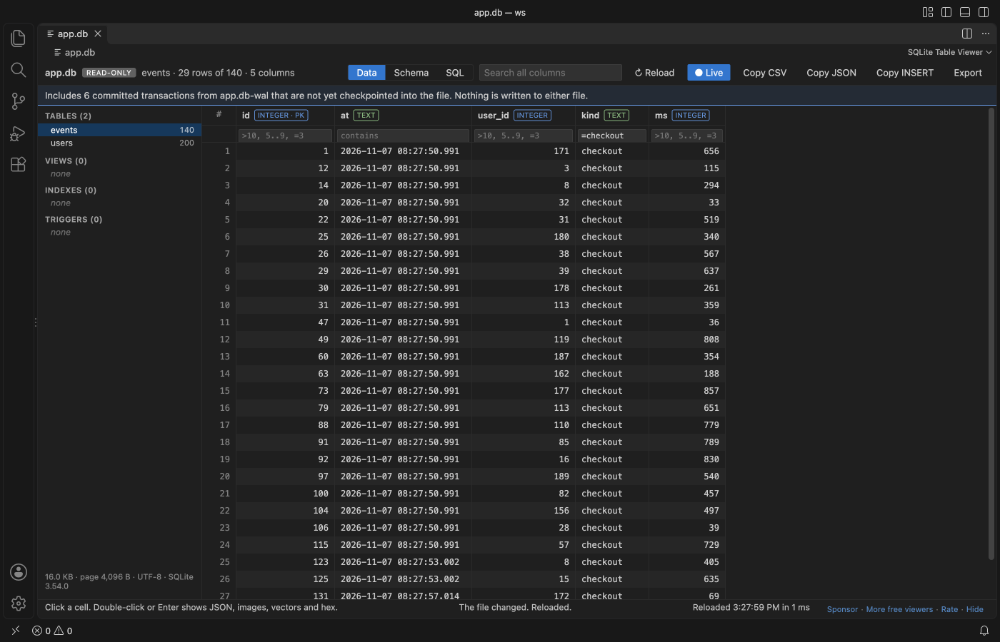
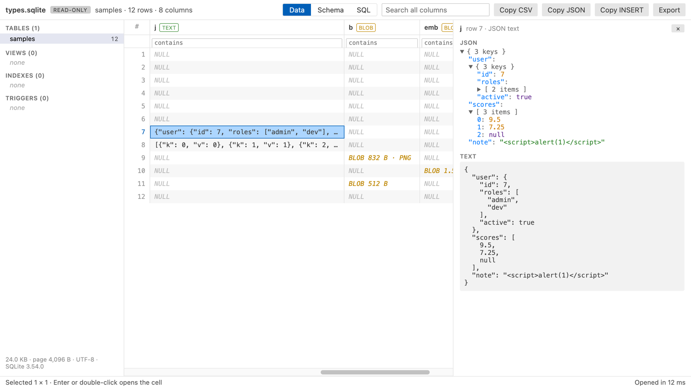
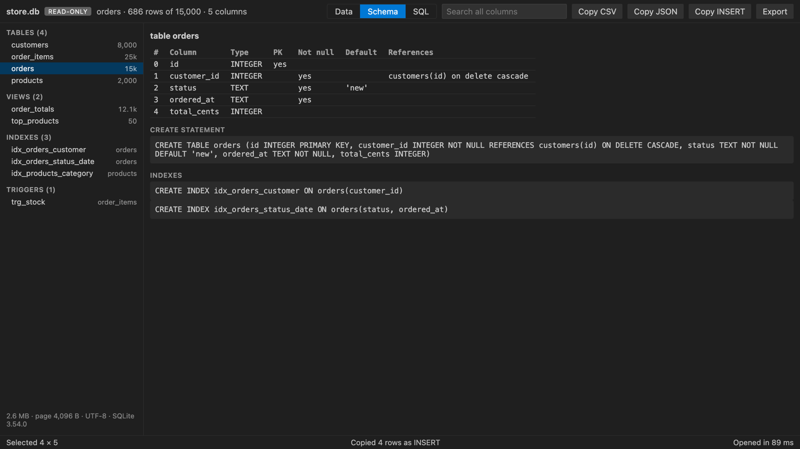
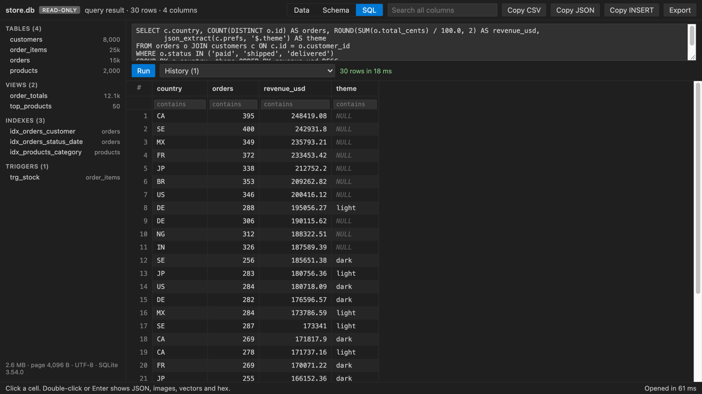
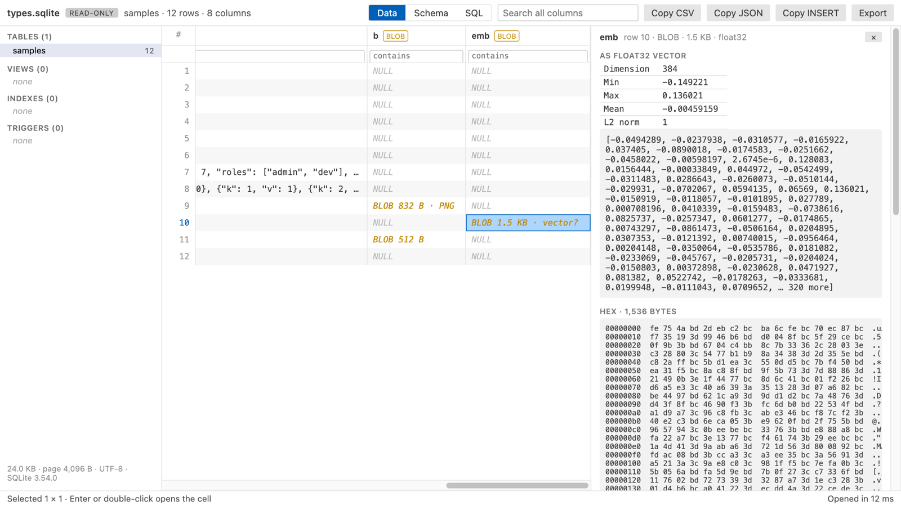

SQLite Viewer & DB Viewer, Database Viewer (Read-Only)
SQLite Viewer & DB Viewer, Database Viewer (Read-Only), a VS Code extension by Zovo
Click a .db or .sqlite file and this SQLite viewer shows its tables, schema, JSON columns and BLOBs in a fast read-only grid. It also shows the rows your app has not checkpointed yet, and it updates while the app writes. Free, with no paid tier and no file size paywall.
Free, MIT license. Needs VS Code 1.90.0 or newer. Extension ID zovo.sqlite-table-viewer, version 0.2.0.

A real VS Code 1.142 window. A Python script holds app.db open in WAL mode and keeps inserting rows, and the grid follows it.
- Sees the rows still in the
-walfile. Many apps (Django, Rails, Prisma, Electron apps, browsers) keep new rows inname.db-waluntil a checkpoint, so other viewers show old data or no tables at all. This one reads the committed transactions from the-walfile, the way SQLite does. - Live. When the app writes, the view reloads by itself and keeps your table, sort, filters and scroll position.
- Safe for production files. The database loads into memory read-only. Writes are refused by SQLite itself (
PRAGMA query_only), and nothing is ever saved back, to the database or to the-walfile. - Sees inside cells. JSON text opens as a tree. PNG, JPEG, GIF and WebP BLOBs show as pictures. A float32 embedding shows its dimension, min, max and norm, which helps with sqlite-vec and RAG tables.
- No setup, no network. Plain JavaScript and SQLite compiled to WebAssembly, running offline in VS Code. No telemetry.
Quick start
- Install SQLite Viewer.
- Click any
.db,.sqlite,.sqlite3,.db3,.s3db,.sl3,.vscdbor.gpkgfile. It opens as a table.
A SQLite file with another name (.data, .store, no extension) is detected by its "SQLite format 3" header, and VS Code offers to open it here. You can also right-click any file and pick "Open in SQLite Table Viewer".
Questions people ask
Is SQLite Viewer & DB Viewer, Database Viewer (Read-Only) free?
Yes. SQLite Viewer & DB Viewer, Database Viewer (Read-Only) is free and MIT licensed.
How do I install SQLite Viewer & DB Viewer, Database Viewer (Read-Only)?
Click "Install in VS Code" above, or search for zovo.sqlite-table-viewer in the Extensions view.
More screenshots

store.db, a generated shop database with 50,000 rows (scripts/make-samples.py), filtered and sorted. It opened in 57 ms.
| JSON column as a tree, light theme | Schema tab, dark theme |
|---|---|
 |  |
| SQL box with history, dark theme | Float32 embedding, light theme |
|---|---|
 |  |
What you can do
Pick a table or view on the left. Each one shows its row count. Indexes and triggers are listed too, and a click shows their SQL.
Click a column header to sort. Clicks cycle through ascending, descending and the table's own order, and NULLs go last. Type in the box under a header to filter that column. Number columns take >10, >=10, <5, !=3 and ranges like 5..9. Text matches any part of the value, =word matches exactly and !word drops rows that contain it. empty and !empty work everywhere. The search box looks in every column. Every filter value is sent to SQLite as a bound parameter, never pasted into the SQL text.
WAL files and live reload
When a database is in WAL mode, SQLite writes new transactions to name.db-wal first and copies them into name.db later, at a checkpoint. A viewer that reads only name.db misses those rows, and a table made since the last checkpoint is not there at all. This viewer reads both files. Only complete, committed transactions are used: frames are checked with the WAL salts and checksums, and a half-written transaction at the end is skipped. A blue line above the grid says how many transactions came from the -wal file. If the -wal file can't be used, a yellow line says so and the main file is shown.
The viewer checks the database and its -wal file once a second. When either changes, it reads them again and shows the same table with the same sort, filters, scroll position and open cell. The "Live" button in the toolbar turns this off (setting sqliteTableViewer.autoReload). Then a line says "The file changed on disk" with a Reload button. "Reload" in the toolbar reads the files again at any time. If a reload happens in the middle of a write and fails, the old view stays and the viewer tries once more.
Rows are fetched one page at a time, so a table with millions of rows scrolls as fast as a small one.
The Schema tab shows each column's declared type, primary key, NOT NULL, default and foreign key, plus the CREATE statements for the table, its indexes and its triggers.
The SQL tab runs one statement at a time. SELECT, WITH, VALUES, EXPLAIN and reading PRAGMAs (table_info, index_list, integrity_check and so on) are allowed. The result fills the same grid, so you can sort, filter and copy it. You see the row count and the time, and the last 20 queries stay in the history list.
Double-click a cell, or press Enter, to open the cell viewer. Text and JSON show in full. A BLOB shows its size and a hex dump, plus the picture for image data and vector stats when the bytes decode as float32 or float64.
Select cells by dragging or with Shift+click, or click row numbers for whole rows. Copy CSV, Copy JSON and Copy INSERT put the selection on the clipboard, and Ctrl+C (Cmd+C on macOS) copies tab-separated values. Export saves every row in view, filtered and sorted, as CSV or JSON.
Settings
| Setting | Default | What it does |
|---|---|---|
sqliteTableViewer.maxFileSizeMB | 512 | Larger files show a message instead of loading |
sqliteTableViewer.copyMaxRows | 100000 | Most rows copied to the clipboard at once |
sqliteTableViewer.exportMaxRows | 1000000 | Most rows written to one CSV or JSON export |
sqliteTableViewer.autoReload | true | Reload the view when the database or its -wal file changes. Turn it off with false to get a Reload notice instead |
sqliteTableViewer.askForRating | true | Ask one time for a Marketplace rating, after 5 databases and 2 days. Turn it off with false |
Limits
- The whole file is loaded into memory, so files over 512 MB show a message instead (setting
sqliteTableViewer.maxFileSizeMB). - Read-only by design. Editing rows is not supported.
- The
-shmfile is not read. It only speeds up the app that owns the database; the-walfile holds the data. - Encrypted databases (SQLCipher, SEE) cannot be opened. They get a clear message, and so do damaged files and files that are not SQLite at all.
- Row counts for files over 100 MB come from
sqlite_stat1when it exists. Otherwise a "count" button counts on demand.
Privacy
SQLite Table Viewer makes no network requests and collects no telemetry. The database is read in a worker thread on your machine. The webview runs under a strict Content Security Policy with no remote scripts, and every value from the file is written as plain text, never as HTML.
License
MIT. sql.js is MIT and SQLite is public domain. See THIRD-PARTY-NOTICES.txt.
Install SQLite Viewer & DB Viewer, Database Viewer (Read-Only)
Click the button to open VS Code and install it, or press Ctrl+P (Cmd+P on macOS) in VS Code and run ext install zovo.sqlite-table-viewer.
Free, MIT license. Needs VS Code 1.90.0 or newer. Extension ID zovo.sqlite-table-viewer, version 0.2.0.
Source code and issues are on GitHub.
Support this work
If this extension saves you time, you can support the work on GitHub Sponsors. Monthly tiers start at $5, and one-time tiers start at $15. Sponsorship is optional, and the tool works the same without it.